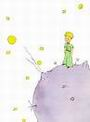
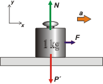

NO ME SALEN
PROBLEMAS RESUELTOS DE FÍSICA DEL CBC
(Leyes de Newton)
|
|

|
 |
1.19- En la superficie de cierto planeta la aceleración
de la gravedad es 5 veces mayor que en la
Tierra. Analizar la veracidad o falsedad de las
proposiciones siguientes:
a- La masa del Kilogramo Patrón terrestre es
allí de 5 kg.
b- El Kilogramo Patrón terrestre pesa allí 5 kgf.
c- Si al Kilogramo Patrón terrestre se lo coloca
allí sobre una mesa con rozamiento despreciable,
y se lo empuja con una fuerza horizontal de
1 kgf, adquiere una aceleración de 5 |g|.
d- Si al Kilogramo Patrón terrestre se lo deja
caer allí libremente, al cabo de 1 segundo habrá
recorrido una distancia 5 veces mayor que la recorrida
en idéntico experimento aquí en la Tierra. |
| |
|
Con lo viajados que somos nosotros, la cantidad de planetas y galaxias que hemos visitado... nos vienen a correr con este problemita de jardín de infantes... Vamos a aclarar un par de tantos, y después respondemos la consigna, una por una. |
|
|
| Por lo pronto, un planeta en el que la gravedad es 5 veces mayor que en la Tierra es uno en cuya superficie los objetos caen más deprisa, la velocidad con la que caen aumenta 5 veces más rápido que lo que aumenta acá (asumo que me estás leyendo desde algún lugar del planeta Tierra). Ok, a esa aceleración de caída la vamos a llamar g', y valdrá g'= 50 m/s² (ya que g = 10 m/s²). Ese planeta no necesariamente tiene que ser más grande ni más masivo que el nuestro, pero no te preocupes por eso, ya te vas a ocupar más adelante cuando te metas en el tema de gravitación. |
 |
|
|
 |
La segunda cuestión que tenemos que aclarar es esa del Kilogramo Patrón, de la que habla el enunciado. Mirá, se trata de una pesa de 1 kg, de hierro o algún metal parecido, que se guarda en un museo envuelto en campanas de vidrio y atmósfera controlada para que no se oxide ni se dañe y para que nadie lo toque sin permiso ni guantes. Se usa para comparar masas y saber cuánta masa tiene otro objeto cualquiera. Es el método más seguro que se encontró para definir masas. |
|
|
Bueno, ahora sí vamos a las proposiciones capciosas de esta guía.
a- La masa del Kilogramo Patrón terrestre es
allí de 5 kg.
¡FALSO! Más falso que las flores de bach. La masa de un objeto no cambia lo lleves donde lo lleves. No me voy a poner a explicarte qué cuerno es la masa, porque eso me llevaría unos 30.685 caracteres sin contar espacios, pero admitamos sin demasiados pruritos que la masa es una medida indicadora de la cantidad de materia que forma un cuerpo (cuando un físico escucha o lee eso se le ponen los pelos de punta, pero vos no le hagas caso, podés reirte si te causa gracia).
De modo que si vos llevás el Kilogramo Patrón, que acá en el museo tiene una masa de 1 kg, a ese planeta pero en el viaje no lo sacás de adentro de las campanas de vidrio para que nadie le agregue ni le quite un cachito de materia, cuando llegues allá va a tener la misma cantidad, o sea la misma masa, o sea 1 kg. Si lo hacés no hace falta que lleves las campanas de vidrio, alcanza con que la cuides porque es bastante cara. Pero todavía más importante es que entiendas que la masa es una invariante en el universo, y que ese principio vale tanto para el Kilogramo Patrón como para cualquier otro objeto.
ACLARACION: En 1905 Albert Einstein descubrió que la masa no es invariante, o sea que puede variar según cómo se la esté observando. Pero ese fenómeno interesantísimo que descubrió Einstein solamente se pone de manifiesto cuando el objeto y el observador se mueven entre sí con velocidades cercanas a la de la luz, de modo que no tenés que preocuparte por ello... por lo menos hasta cuarto año de la carrera.
b- El Kilogramo Patrón terrestre pesa allí 5 kgf. |
|
VERDADERA. Si el Kilogramo Patrón lo llevás a la verdulería de la esquina y lo ponés en la balanza va a marcar exactamente 1 kgf. Y si eso no ocurre podés hacer la denuncia en Defensa del Consumidor. Ahora, si llevás el Kilogramo Patrón al planeta del Principito, la aguja de la balanza va a marcar 5 kgf.
Para darte cuenta de que esta proposición es verdadera tenés que saber dos cosas. La primera es que kilogramo fuerza (kgf) es una unidad de fuerza, igual que el Newton (N), y como ambas unidades sirven para medir la misma magnitud existe una simple relación numérica entre ambos: 10 N = 1 kgf. Si entendiste lo que te acabo de explicar aceptarás que si las balanzas de los verduleros vinieran graduadas en N en vez de kgf, la de la esquina marcaría 10 N y la del planeta de Supèry 50 N. |
 |
|
|
Ok, vamos bien. La segunda cosa que tenés que saber es que el peso de un cuerpo, P, (o sea la fuerza con que el planeta que te toca en suerte te atrae hacia su centro) se puede conocer fácilmente de esta manera que surge de la aplicación de la segunda ley de la dinámica: P = m . g, donde m es la masa del cuerpo y g es la aceleración con la que caería si se lo suelta, que ya sabés cuánto vale tanto acá como allá. Entonces si P' es el peso en el planeta extraño para calcularlo sin ir hasta allá podemos hacer
P' = m . g'
P' = 1 kg . 50 m/s²
P' = 50 N = 5 kgf
c- Si al Kilogramo Patrón terrestre se lo coloca
allí sobre una mesa con rozamiento despreciable,
y se lo empuja con una fuerza horizontal de
1 kgf, adquiere una aceleración de 5 |g| |
|
¡FALSO! ¡Y te lo juro sobre la tumba de Newton! Alcanza para darse cuenta, con aplicar la segunda ley de la dinámica, que se cumple por igual en cada rincón del universo.

como las fuerzas que actúan lo hacen en varias direcciones la ley (vectorial) la aplico en dos direcciones según un SR que elegí. |
 |
|
|
ΣFy = m ay = 0
En el eje y la aceleración vale cero: ese es el significado de "estar apoyado". En cambio en el eje x la pesita se acelera, veamos cuánto:
ΣFx = m ax → F = m a de donde
a = F / m = 1 kgf / 1 kg = 10 N / 1 kg = 10 m/s² = g
Un dato interesante de este resultado es que no cambia... sin importar en qué lugar del universo lo realices.
d- Si al Kilogramo Patrón terrestre se lo deja
caer allí libremente, al cabo de 1 segundo habrá
recorrido una distancia 5 veces mayor que la recorrida
en idéntico experimento aquí en la Tierra.
VERDADERO. Y te lo voy a demostrar, y prestá atención porque el desafío te lo voy a hacer en relación a esta proposición. Para una caída libre en la Tierra podemos calcular de esta manera:
Δy = ½ g Δt²
y en el planeta del principito
Δy' = ½ g' Δt2
donde Δy' es lo que se desplazará allá. Δt es 1 s, y como los relojes funcionan allá igual que acá descarto que son iguales (aunque no estaría mal tratar de corroborarlo). Como g' = 5 g podemos vincular ambas ecuaciones e increíble y sorprendentemente obtenemos Δy'= 5 Δy |
|
| |
 |
| |
| DESAFIO: La última proposición la demostré sin una sola explicación verbal, o sea... todo el discurrir fue analítico, algebraico. Dale, animate a demostrarlo con palabras... como si tuvieses que convencer a tu sobrinito que de álgebra ni jota. |
|
| Algunos derechos reservados.
Se permite su reproducción citando la fuente, o sea: de dónde está afanado. Última actualización dic-06. Buenos Aires, Argentina. |
|
|
|